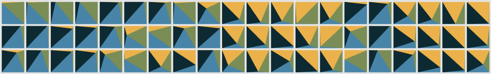
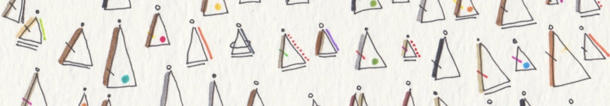
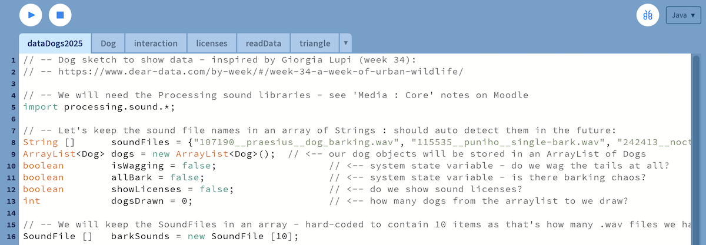

This page provides details of the Denouement session in which a few loose ends are tidied up and a few examples shared.
It is not a complete record of all that was / will be discussed in a somewhat unstructured lecture that features little new content.
1. Noise
I didn't explain noise() very well in class.
The method returns a value between 0 and 1, but each successive value is informed by / related to the last.
The extent of this relationship depends upon how similar the successive parameters to noise are - more similar gives a more related random number, less similar gives a less related one. Probably!
So it's not wholly random, more subtly so and we can control the subtlety.
Do have a look at the documentation and examples online. And have a play with this simple sketch that uses noise() in two dimensions to vary the position of a shape.
See the excellent page on Randomness for a more thorough explanation.
2. Wobblers
We have been inspired by kusakari and the wonderful sketches available on OpenProcessing. Have a look at this one ...
0661 - a grid of pulsating coloured scales, or ... errr ... 'wobblers'

More inspiring digital art from kusakari.
Now let's have a think about it ...
Sketch Thinking
I want to get you thinking about two aspects of the sketch:
How Does it Work? - not in detail, but in general terms. Which of the concepts that you have studied might be being used?
How Could it Convey Information? - a key theme in our #CreativeCoding efforts. Which of the variations might we use to depict the data that we have collected?
Wobbler Sketch
I have tried to implement something similar in a Processing sketch that includes a Wobbler class : weekWobblers.zip
Download it, unzip it, have a look and have a play!
Download it, unzip it, have a look and have a play!
Hopefully this will give you a model that brings together some of the ideas that we have been focusing on :
reading data from file
creating a class that contains and depicts data
animation and randomness
3. Dear Data Dogs
Having said all of that we understand the need to demonstrate some of the ways in which the things you are learning can be put together to begin to address the task in hand. One of the important concepts that we want you to consider and use is the class capability in Processing.
Classes enable us to define and instantiate objects that hold and depict data about particular phenomena - such as the ones that you are recording data about.
We provide a simple example of how this might be achieved in the progressively sophisticated Robot classes presented in Objects : Robots.
But you could create any kind of objects to capture and display your data.
Here's another example.
It's some code that captures data in a class and uses objects that contain drawing methods to depict data in (what I might claim to be) interesting and original ways. Well, they were original when Giorgia Lupi sketched them on the front of a postcard, and I have decided to modify them a little for the digital context.
The code is based the Week 34 : A week of urban wildlife: and specifies a class of Data Dogs from which we can generate varies instances (objects).

Data Dogs - based upon Giorgia Lupi's efforts in Week 34 : A week of urban wildlife (top) and my limited efforts at hacking Processing to make interactive symbols that depict data and bark (bottom).
In short, the sketch has six tabs, and you can download (copy and paste) the context of each tab in turn below to recreate the sketch.
The first a tab containing the globals, setup() and draw().
// -- Dog sketch to show data - inspired by Giorgia Lupi (week 34):
// -- https://www.dear-data.com/by-week/#/week-34-a-week-of-urban-wildlife/
// -- We will need the Processing sound libraries - see 'Media : Core' notes on Moodle
import processing.sound.*;
// -- Let's keep the sound file names in an array of Strings : should auto detect them in the future:
String [] soundFiles = {"107190__praesius__dog_barking.wav", "115535__puniho__single-bark.wav", "242413__noctaro__small-dog-bark-02.wav", "277058__kwahmah_02__single-dog-bark.wav", "372524__glitchedtones__dog-shih-tzu-bark-single-01.wav", "420449__mrthenoronha__barking-2.wav", "502655__joviansounds__single-dog-bark-king-charles-spaniel.wav", "699822__8bitmyketison__dog-bark.wav", "368009__trngle__meow-1.wav", "242402__noctaro__midsized-dog-bark-01.wav"};
ArrayList dogs = new ArrayList(); // <-- our dog objects will be stored in an ArrayList of Dogs
boolean isWagging = false; // <-- system state variable - do we wag the tails at all?
boolean allBark = false; // <-- system state variable - is there barking chaos?
boolean showLicenses = false; // <-- do we show sound licenses?
int dogsDrawn = 0; // <-- how many dogs from the arraylist to we draw?
// -- We will keep the SoundFiles in an array - hard-coded to contain 10 items as that's how many .wav files we have
SoundFile [] barkSounds = new SoundFile [10];
void setup () {
size(1100, 200);
textAlign(CENTER);
textSize(16);
// -- Read the WAV sounds from the files into our array of SoundFile objects:
int i=0;
for (String s : soundFiles) {
barkSounds[i] = new SoundFile(this,s);
i++;
}
// -- Declare and initialise the first dog ... add it to ArrayList to get things going:
PVector pos = new PVector(100, height/2);
Dog pup = new Dog ("Sammy", pos, 45, color(128, 96, 32, 128), 25, true, 3, 5, 30);
pup.isDrawn=true;
dogs.add(pup);
dogs.get(0).printFields(); // <-- use this method in Dog class to output information about first dog to console.
// -- Get data from file and create the ArrayList of data dogs!
readData();
}
void draw() {
background(250);
randomSeed(289186); // <-- useful - means that 'random' numbers are the same in all draw loops!
int i=1; // <-- counter - used to position dogs in a line (I like tidy dogs)
// -- loop through all Dogs in the dogs ArrayList one at a time:
for (Dog dog : dogs) {
dog.position.x = 90*i; // <-- update dog's x position based upon it's position in the ArrayList;
dog.draw(); // <-- draw the dog on the canvas with it's draw() method
i++;
}
// -- add license information to canvas if this global state variable is true:
if (showLicenses) {
showLicenses();
}
}
A second tab contains the Dog class, with fields, a constructor and methods to draw() (canvas) and print() (console) characteristics of the object.
// -- Dog class to show data - inspired by Giorgia Lupi (week 34):
// -- https://www.dear-data.com/by-week/#/week-34-a-week-of-urban-wildlife/
class Dog {
// -- fields, or instance variables - characteristics that are stored in, and vary by, each dog object / instance:
String name; // -- dog's name
PVector position; // -- dog's position
float size, tail; // -- varying characteristics
color colour; // -- kinda obvious, right?
boolean ownerF; // -- owner is female?
boolean isAwake; // -- dog is active??
boolean isDrawn; // -- dog is drawn??
boolean showLicense; // -- do we show sound license??
int licenseTime; // -- when was the dog sound played
int fur; // -- fur length - constrained to 0-3?
int bark; // -- how much barking - constrained to 0-5?
int wagSpeed; // -- how fast does the tail wag? (60 = once per second)
PVector p1, p2, p3; // -- three coordinates that make up triangle position around 'position'.
SoundFile barkSound;
String soundFile; // -- name of sound file for this dog.
int dogNumber;
// -- Constructor runs every time the class is initialized
Dog (String name, PVector pos, float size, color colour,
float tail, boolean ownerF, int fur, int bark, int wag) {
// -- Initialise the instance variables with 'this' keyword:
this.position = pos;
this.name = name;
this.size = size;
this.colour = colour;
this.tail = tail;
this.isAwake = false;
this.isDrawn = false;
this.ownerF = ownerF;
this.fur = constrain(fur, 0, 3); // <-- constrains value to the range 0-3
this.bark = constrain(bark, 0, 5); // <-- constrains value to the range 0-5
this.wagSpeed = wag;
// -- Find positions of triangle corners;
calcPosition();
// -- Allocate a number to the dog (its position in the ArrayList):
this.dogNumber = dogs.size();
//println("dogNumber:", dogNumber, p1, p2, p3);
// -- Allocate a SoundFile to the dog, according to its position in the ArrayList:
this.barkSound = barkSounds[dogNumber];
this.soundFile = soundFiles[dogNumber];
println("dogNumber:", dogNumber, name, "\t", soundFile);
// -- This will hold the time in millis() when the dog was clicked, so we know how long to show the license:
licenseTime = 0;
}
// -- Basic output to console:
void printFields() {
println("My Dog", name, "is:", size, tail, colour, ownerF, fur, bark);
println("I am positioned at (", position.x, ",", position.y, ")");
}
// -- draw that characteristics of the dog based upon the fields or instance variables.
void draw() {
// -- do nothing if Dog is not drawn!
if (!isDrawn) return;
// -- If the dog was clicked less than 2 seconds ago ... show the license:
if (showLicense && millis()-licenseTime < 2000) {
showLicense(dogNumber);
}
stroke(32, 128); // <-- soft outlines for shapes:
strokeWeight(1);
textAlign(CENTER, CENTER);
textSize(16);
// -- Store mouse position as a PVector as that's what our triangle detection method requires:
PVector pM = new PVector (mouseX, mouseY);
// -- If the mouse is in the triangle, and the mouse is pressed ...
// -- set dog variables (isAwake) and play sound and show license!
if (pointInTriangle (pM, p1, p2, p3)) {
if (mousePressed) {
isAwake = true;
barkSound.play();
showLicense = true;
licenseTime = millis();
}
fill(255, 255, 128); // <-- the dog's colour (transparent)!
} else {
fill(colour); // <-- the dog's colour!
}
// -- If this system variable is true, the sounds anyway, unlesds it is already playing:
if (allBark) {
if (!barkSound.isPlaying()) {
barkSound.play();
}
}
// -- Draw the body:
triangle(p1.x, p1.y, p2.x, p2.y, p3.x, p3.y); // <-- the dog's body!
// -- woman or man as owner? (as recorded and depicted by Giorgia)
if (ownerF) {
noFill();
} else {
fill(32);
}
circle(p2.x, p2.y-10, 5);
// -- how furry? (as recorded and almost as depicted by Giorgia)
for (int i=0; i0) {
strokeWeight(fur/2f);
stroke(220, 32, 32, 128);
line(p2.x+4, p2.y+2, p3.x+3, p3.y-2);
}
// -- add tail : (Giorgia's dogs had no tails)
PVector tailEnd = new PVector (p2.x, p1.y+tail); // <-- initial endpoint of tail!
strokeWeight(1);
stroke(32, 128);
// -- Returns an integer that varies between 0 and HALF_PI as frameCount increases:
float z = frameCount%wagSpeed;
float a = map (z, 0, wagSpeed, 0, HALF_PI);
// -- rudimentary tail-wagging capability based on frameCount
if (isWagging && isAwake) {
// -- calculate tail end point based upon whether we have odd or even numbers of wags!
int isEven = frameCount/wagSpeed; // <-- is tail moving left or right?
if (isEven%2==1) {
tailEnd.x = p2.x + sin(QUARTER_PI-a) * tail;
tailEnd.y = p1.y + cos(QUARTER_PI-a) * tail;
} else {
tailEnd.x = p2.x + sin(a-QUARTER_PI) * tail;
tailEnd.y = p1.y + cos(a-QUARTER_PI) * tail;
}
} else {
// -- the original starting position (no wagging):
tailEnd.x = p2.x;
tailEnd.y = p1.y + tail;
}
line(p2.x, p1.y, tailEnd.x, tailEnd.y); // -- draw the tail
// -- name :
fill(64, 200);
text(name, p2.x, p1.y+45);
}
void calcPosition() {
// -- Add a bit of randomness to positions:
position.x += random(-10, 10);
position.y += random(-20, 20);
// -- Triangle coordinates around 'position':
this.p1 = new PVector (position.x-size/3f, position.y+size/2f);
this.p2 = new PVector (position.x, position.y-size/2f);
this.p3 = new PVector (position.x+size/3f, position.y+size/2f);
}
}
I have an 'interaction' tab in which I define reactions to events - just keyPressed() in this case.
// -- Read the data from file to create the dogs!
void readData() {
String [] lines = loadStrings("dogData.csv");
int counter=0;
for (String line : lines) {
String [] tokens = split(line,",");
String name = tokens[0];
float size = float(trim(tokens[1]));
int red = int(trim(tokens[2]));
int grn = int(trim(tokens[3]));
int blu = int(trim(tokens[4]));
int alp = int(trim(tokens[5]));
float tail = float(trim(tokens[6]));
boolean ownF = boolean(trim(tokens[7]));
int fur = int(trim(tokens[8]));
int brk = int(trim(tokens[9]));
int wag = int(trim(tokens[10]));
//println(fur,brk,wag, brk+fur);
//printArray(tokens);
if (counter>0) {
Dog pup = new Dog (name, new PVector(0,0), size, color(red, grn, blu, alp), tail, ownF, fur, brk, wag);
dogs.add(pup);
}
counter ++;
}
}
I put code that I have acquired from existing sources in a tab with the named author - 'Kornel Kisielewicz' in this case - to make it absolutely clear of that this is not original code and to make it easy to find and confirm the original source.
// -- Sounds used under license: reads licenses from file, displays them.
// -- Shows a single license:
void showLicense(int n) {
// -- Inefficient to read from file each time this is called, but low cost.
String [] data = loadStrings("dogSoundLicenses.txt");
String license = data[n];
String [] detail = split(license, "|");
fill(32,200);
textSize(12);
textAlign(RIGHT);
text(detail[0], width-20, 20);
text(detail[1], width-20, 35);
text(detail[2], width-20, 50);
}
// -- Shows a single license:
void showLicenses() {
String [] data = loadStrings("dogSoundLicenses.txt");
pushMatrix(); // <-- saves position of origin
for (int i=0; i<data.length; i++) {
showLicense(i); // <-- calls the above to show a single license
translate(0, i*25); // <-- moves the origin down a little in each loop iteration
}
popMatrix(); // <-- returns origin to position saved above
}
Have a look at the code to get ideas about how to combine classes, sounds and interaction to depict data.
If you want the code to work, then try using the arrangement shown below, with a tab for each code example.

The six code examples provided above are arranged in tabs in a single Processing sketch. You will need to add the data files (see below) and download the sound files to make it work. Put them in the 'data' folder of the sketch.
However, I have not provided the sound files, so you'll need to get some wild sounds of howling and barking, or use the example sounds that we provided in the Processing Sound Test to hear anything.
Here is the data file. Change the data if you like, but be sure to put the file in the 'data' folder to make the sketch work. The file name must be correctly referenced in the first line of the readData method.
Here are the names, URLs and licenses of the files I used should you want to get hold of them.
This file needs to go in the 'data' folder to make the sketch work.
The first line of header information will be ignored.
Dog barking, 15m distance by AtoMediaDesign|https://freesound.org/s/649020/|License: Attribution 4.0
Dethan play bark by sirdethan|https://freesound.org/s/718991/|License: Attribution 4.0
Single Bark.wav by Puniho|https://freesound.org/s/115535/|License: Attribution 3.0
Single Dog Bark (King Charles Spaniel) by JovianSounds|https://freesound.org/s/502655/|License: Creative Commons 0
Single Dog Bark by kwahmah_02|https://freesound.org/s/277058/|License: Creative Commons 0
Dog Bark.wav by 8bitmyketison|https://freesound.org/s/699822/|License: Creative Commons 0
Dog Shih Tzu Bark Single 01.wav by Glitchedtones|https://freesound.org/s/372524/|License: Creative Commons 0
Small Dog Bark 02 by noctaro|https://freesound.org/s/242413/|License: Attribution 4.0
Meow 1.wav by TRNGLE|https://freesound.org/s/368009/|License: Attribution 3.0
Barking 2.wav by Mrthenoronha|https://freesound.org/s/420449/|License: Creative Commons 0
dog_barking.wav by praesius|https://freesound.org/s/107190/|License: Attribution 3.0
Midsized Dog Bark 01 by noctaro|https://freesound.org/s/242402/|License: Attribution 4.0
And you will need to accurately list all of the sound files in the soundFiles global variable too:
// -- Dog sketch to show data - inspired by Giorgia Lupi (week 34):
// -- https://www.dear-data.com/by-week/#/week-34-a-week-of-urban-wildlife/
// -- We will need the Processing sound libraries - see 'Media : Core' notes on Moodle
import processing.sound.*;
// -- Let's keep the sound file names in an array of Strings : should auto detect them in the future:
String [] soundFiles = {"mixkit-dog-barking-twice-1.wav", "mixkit-happy-puppy-barks-741.wav", "mixkit-medium-size-angry-dog-bark-54.wav", "277058__kwahmah_02__single-dog-bark.wav", "372524__glitchedtones__dog-shih-tzu-bark-single-01.wav", "420449__mrthenoronha__barking-2.wav", "502655__joviansounds__single-dog-bark-king-charles-spaniel.wav", "699822__8bitmyketison__dog-bark.wav", "368009__trngle__meow-1.wav", "242402__noctaro__midsized-dog-bark-01.wav"};
// etc ...
To be honest, I suggest you have fun finding some other sounds instead - perhaps on MixKit or another sound archive that has samples available with rights that suit your intended use: MODIFY!
And update the value of soundFiles when you do so!
4. Looking Down (and Around)
In class, somebody asked what to do if they could not find 100 data items.
My response is an unashamed one - learn to be more observant.
I probably said this in at least 100 words, which could have been the 100 words you used as data.
There are hundreds of things going on around you that you could observe, it's just about tuning in to the world.
I made a few suggestions :
the sequence of buttons you click on a games controller: ❌⭕️🔺🟥❌⭕️🔺🟥❌❌❌❌⭕️⭕️⭕️, etc.
the sequence of buttons you hit in Guitar Hero - and whether they were correct? Have a friend recording: 🟩🟥🟦🟨🟩🟥🟦🟨🟩🟥🟩🟥🟩🟥🟦🟨, etc.
the colour or texture or material of the next 100 different floors that you find yourself walking on: Take a photo and think of the numeric and textual characteristics that yiu could capture.
how the next 100 doors that you go through open: pull? push? open? automatic?
The Great Hall has an overwhelming collection of flooring types for those interested in the materials that they walk on to enjoy.
5. Fin
Hopefully this gives you some ideas, and you may want to try to get the sketch working.
However, the main intent here it to show you that we can combine programming concepts and data in ways that are inspired by, but differentiable from, existing efforts, to produce something interesting and original: